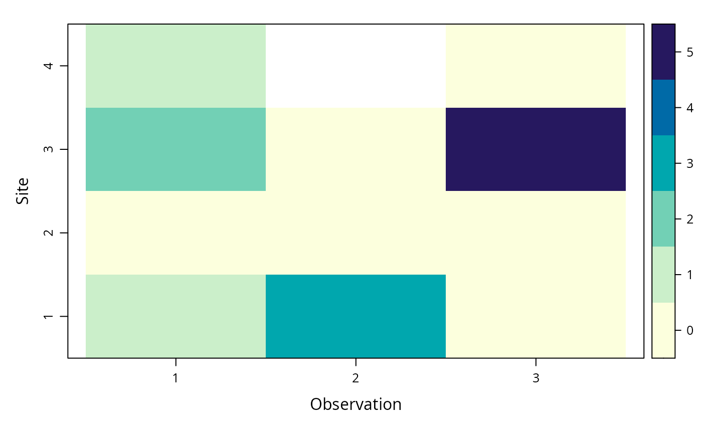

occuCOPunmarkedFrameOccuCOP.RdOrganizes count data along with the covariates. The unmarkedFrame S4 class required by the data argument of occuCOP.
unmarkedFrameOccuCOP(y, L, siteCovs = NULL, obsCovs = NULL)An MxJ matrix of the count data, where M is the number of sites, J is the maximum number of observation periods (sampling occasions, transects, discretised sessions...) per site.
An MxJ matrix of the length of the observation periods. For example, duration of the sampling occasion in hours, duration of the discretised session in days, or length of the transect in meters.
A data.frame of covariates that vary at the site level. This should have M rows and one column per covariate
A named list of dataframes of dimension MxJ, with one dataframe per covariate that varies between sites and observation periods
unmarkedFrameOccuCOP is the unmarkedFrame S4 class that holds data to be passed to the occuCOP model-fitting function.
an object of class unmarkedFrameOccuCOP
# Fake data
M <- 4 # Number of sites
J <- 3 # Number of observation periods
# Count data
(y <- matrix(
c(1, 3, 0,
0, 0, 0,
2, 0, 5,
1, NA, 0),
nrow = M,
ncol = J,
byrow = TRUE
))
#> [,1] [,2] [,3]
#> [1,] 1 3 0
#> [2,] 0 0 0
#> [3,] 2 0 5
#> [4,] 1 NA 0
# Length of observation periods
(L <- matrix(
c(1, 3, NA,
2, 2, 2,
1, 2, 1,
7, 1, 3),
nrow = M,
ncol = J,
byrow = TRUE
))
#> [,1] [,2] [,3]
#> [1,] 1 3 NA
#> [2,] 2 2 2
#> [3,] 1 2 1
#> [4,] 7 1 3
# Site covariates
(site.covs <- data.frame(
"elev" = rexp(4),
"habitat" = factor(c("forest", "forest", "grassland", "grassland"))
))
#> elev habitat
#> 1 0.006570023 forest
#> 2 0.055198612 forest
#> 3 1.748454882 grassland
#> 4 0.077197554 grassland
# Observation covariates (as a list)
(obs.covs.list <- list(
"rain" = matrix(rexp(M * J), nrow = M, ncol = J),
"wind" = matrix(
sample(letters[1:3], replace = TRUE, size = M * J),
nrow = M, ncol = J)
))
#> $rain
#> [,1] [,2] [,3]
#> [1,] 2.4571904 0.4291083 1.9080237
#> [2,] 1.5239024 0.8103371 0.1374310
#> [3,] 1.3803957 0.2421403 0.3430627
#> [4,] 0.1651082 0.4455211 0.2256608
#>
#> $wind
#> [,1] [,2] [,3]
#> [1,] "c" "a" "c"
#> [2,] "b" "b" "c"
#> [3,] "a" "a" "b"
#> [4,] "a" "a" "a"
#>
# Organise data in a unmarkedFrameOccuCOP object
umf <- unmarkedFrameOccuCOP(
y = y,
L = L,
siteCovs = site.covs,
obsCovs = obs.covs.list
)
# Extract L
getL(umf)
#> [,1] [,2] [,3]
#> [1,] 1 3 NA
#> [2,] 2 2 2
#> [3,] 1 2 1
#> [4,] 7 1 3
# Look at data
print(umf) # Print the whole data set
#> Data frame representation of unmarkedFrame object.
#> y.1 y.2 y.3 L.1 L.2 L.3 elev habitat rain.1 rain.2 rain.3
#> 1 1 3 0 1 3 NA 0.006570023 forest 2.457190 0.4291083 1.9080237
#> 2 0 0 0 2 2 2 0.055198612 forest 1.523902 0.8103371 0.1374310
#> 3 2 0 5 1 2 1 1.748454882 grassland 1.380396 0.2421403 0.3430627
#> wind.1 wind.2 wind.3
#> 1 c a c
#> 2 b b c
#> 3 a a b
#> [ reached 'max' / getOption("max.print") -- omitted 1 rows ]
print(umf[1, 2]) # Print the data of the 1st site, 2nd observation
#> Data frame representation of unmarkedFrame object.
#> y.1 L.1 elev habitat rain wind
#> 1 3 3 0.006570023 forest 0.4291083 a
summary(umf) # Summarise the data set
#> unmarkedFrameOccuCOP Object
#>
#> 4 sites
#> Maximum number of sampling occasions per site: 3
#> Mean number of sampling occasions per site: 2.75
#> Sites with at least one detection: 3
#>
#> Tabulation of y observations:
#> 0 1 2 3 5 <NA>
#> 6 2 1 1 1 1
#>
#> Tabulation of sampling occasions length:
#> 1 2 3 7
#> 4 4 2 1
#>
#> Site-level covariates:
#> elev habitat
#> Min. :0.00657 forest :2
#> 1st Qu.:0.04304 grassland:2
#> Median :0.06620
#> Mean :0.47186
#> 3rd Qu.:0.49501
#> Max. :1.74845
#>
#> Observation-level covariates:
#> rain wind
#> Min. :0.1374 Length:12
#> 1st Qu.:0.2380 Class :character
#> Median :0.4373 Mode :character
#> Mean :0.8390
#> 3rd Qu.:1.4163
#> Max. :2.4572
plot(umf) # Plot the count of detection events

# L is optional, if absent, it will be replaced by a MxJ matrix of 1
unmarkedFrameOccuCOP(
y = y,
siteCovs = site.covs,
obsCovs = obs.covs.list
)
#> Warning: L is missing, replacing it by a matrix of 1.
#> Data frame representation of unmarkedFrame object.
#> y.1 y.2 y.3 L.1 L.2 L.3 elev habitat rain.1 rain.2 rain.3
#> 1 1 3 0 1 1 1 0.006570023 forest 2.457190 0.4291083 1.9080237
#> 2 0 0 0 1 1 1 0.055198612 forest 1.523902 0.8103371 0.1374310
#> 3 2 0 5 1 1 1 1.748454882 grassland 1.380396 0.2421403 0.3430627
#> wind.1 wind.2 wind.3
#> 1 c a c
#> 2 b b c
#> 3 a a b
#> [ reached 'max' / getOption("max.print") -- omitted 1 rows ]
# Covariates are optional
unmarkedFrameOccuCOP(y = y)
#> Warning: L is missing, replacing it by a matrix of 1.
#> Data frame representation of unmarkedFrame object.
#> y.1 y.2 y.3 L.1 L.2 L.3
#> 1 1 3 0 1 1 1
#> 2 0 0 0 1 1 1
#> 3 2 0 5 1 1 1
#> 4 1 NA 0 1 NA 1